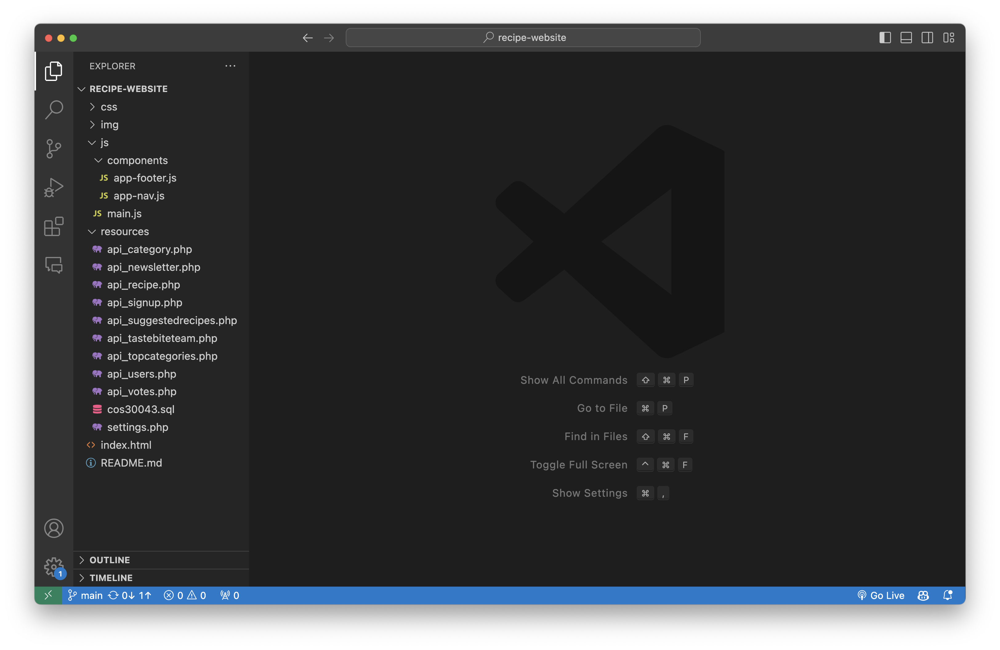
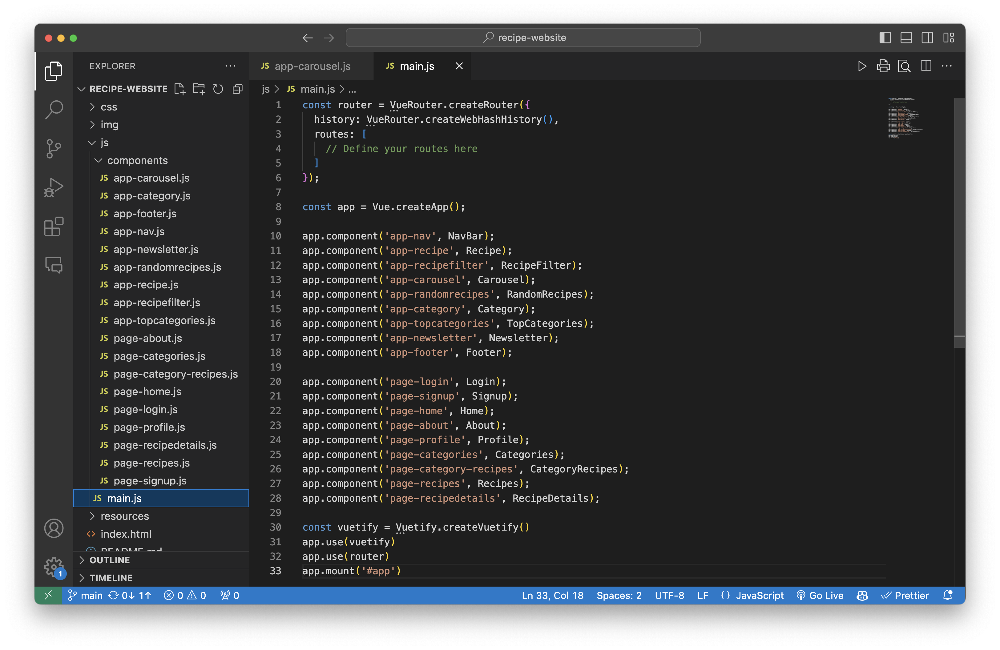
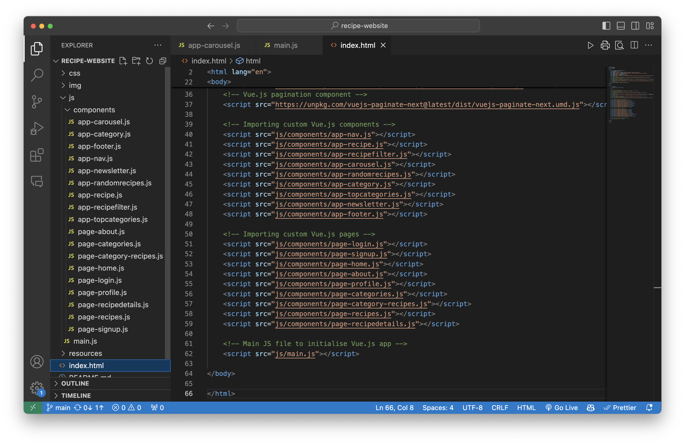
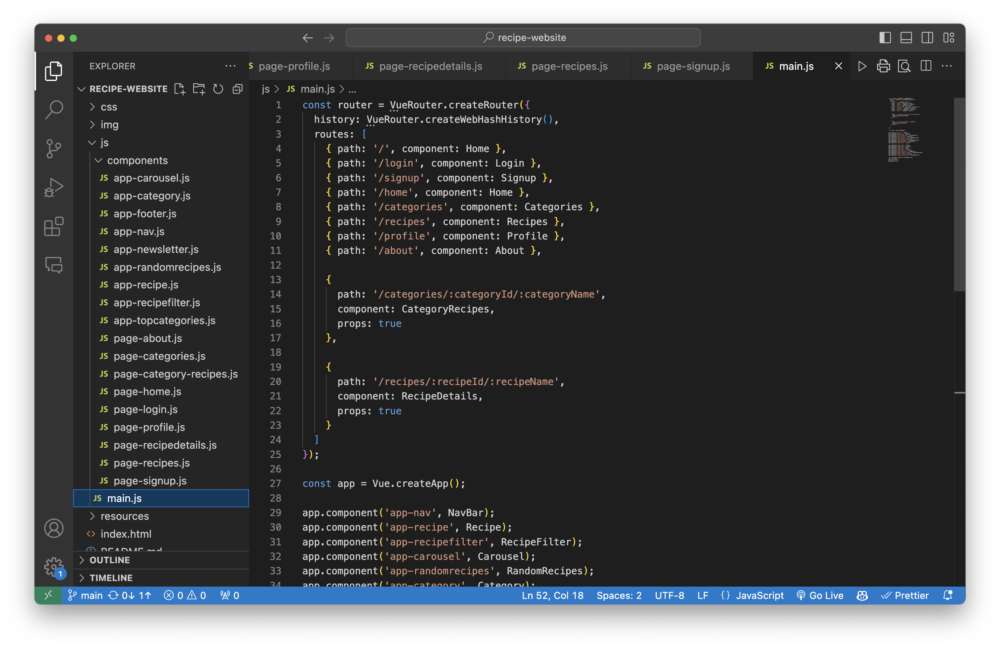
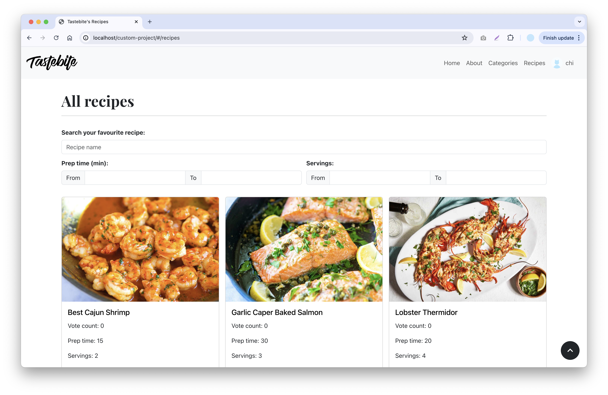
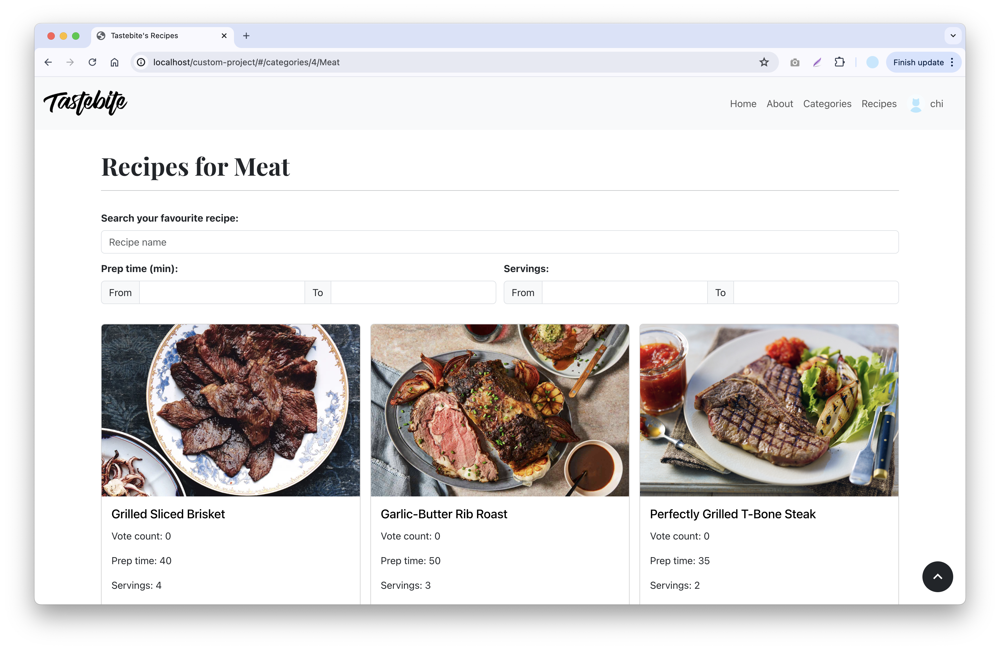
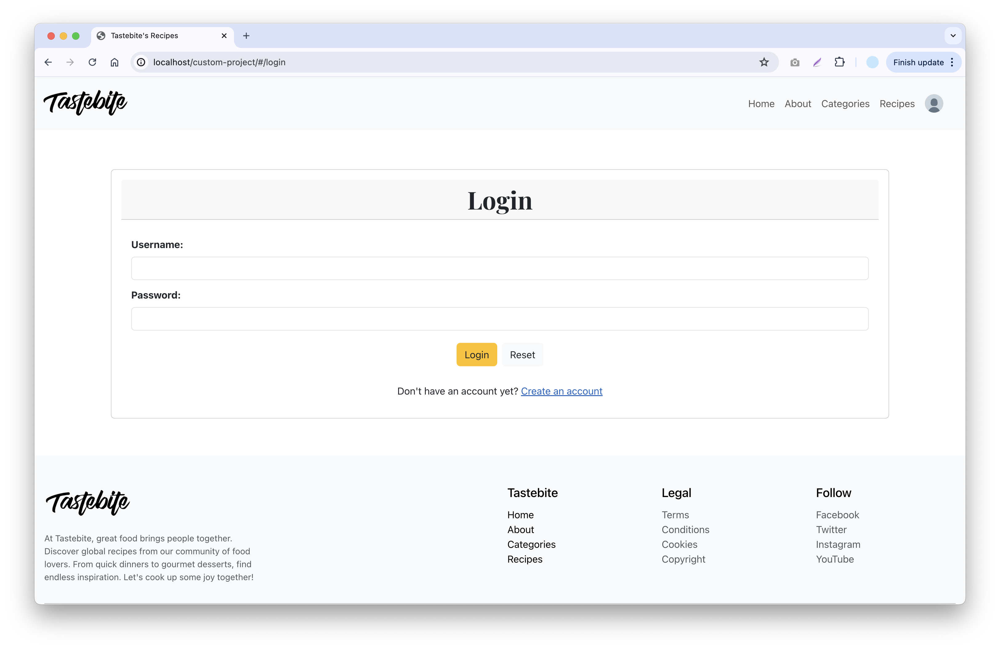
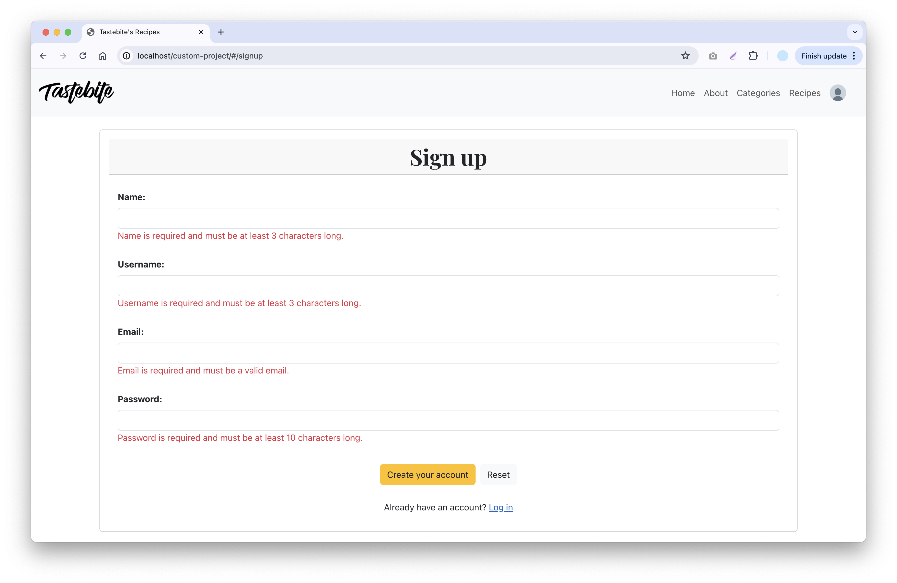
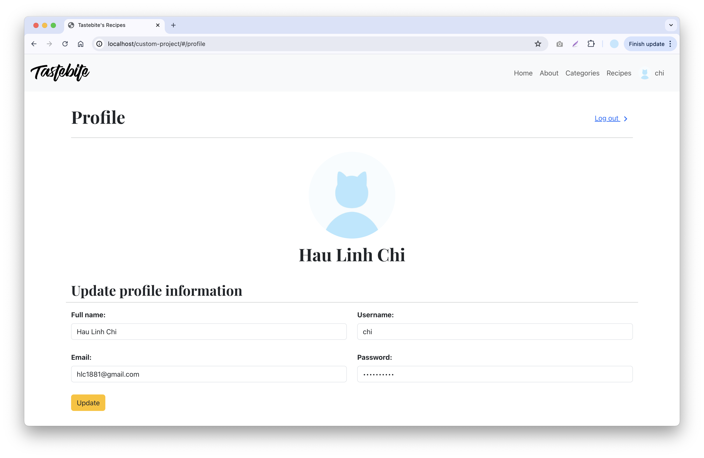

I. Overview
In this blog post tutorial, we will create a recipe-sharing website using Vue.js and Bootstrap. For the video, we will only focus on creating the login, signup and profile page in details. The website will feature a clean, responsive, coherent design and include CRUD functionality for different entities. We will cover some essential VueJS concepts from the 12 weeks of the COS30043 Interface Design and Development course such as Model-View-ViewModel (MVVM) architectural pattern, data-binding, directives, component-based architecture, passing data to child components with props, router, API and asynchronous data fetching.
The website will feature a clean, responsive, coherent design and include CRUD functionality for different entities. We will cover some essential VueJS concepts from the 12 weeks of the COS30043 Interface Design and Development course such as Model-View-ViewModel (MVVM) architectural pattern, data-binding, directives, component-based architecture, passing data to child components with props, router, API and asynchronous data fetching.II. What Are We Creating in This Tutorial?
1. Demonstration Video
Link youtube: https://www.youtube.com/watch?v=ptGThnGOSYY
2. Key Features
We are going to create a recipe website where users can:
- Create a new account
- Log in
- Browse categories
- Browse all recipes or recipes by category
- Search recipes by name
- Filter recipes by prep time and servings
- View recipe details (prep time, servings, ingredients, instructions)
- Vote and unvote for recipes
- Suggest and delete recipe ideas for the Tastebite team
- Subscribe to the newsletter
III. Specific Lecture Week Topics and Concepts Covered
- Model-View-ViewModel (MVVM) architectural pattern
- Two-way data-binding
- Directive:
- Model - Data/variable: v-bind, v-model, v-once
- View - Conditional: v-if, v-elseif, v-else, v-show
- View - Loop: v-for
- View - Function-like: v-on
- Components
- Passing data to child components with props
- Custom directive
- Router
- Dynamic route with param
- Request, insert, update and delete server data using API
- Asynchronous data fetching
IV. Project Setup
1. Download and run XAMPP
- Download XAMPP from the official website.
- Install and launch XAMPP.
- Start the Apache (Web Server) and MySQL modules.
2. Download the necessary files
- Go to this link to download the necessary files for the project setup.
- Place the downloaded files in the
XAMPP/htdocs/recipe-websitedirectory.
3. Set up database and tables
- Copy the SQL queries from the cos30043.sql file.
- Open your browser, go to http://localhost/phpmyadmin/ and paste the queries into the SQL tab.
4. Run the code
- Ensure that XAMPP's Apache (Web Server) and MySQL modules are running.
- Open your browser and go to http://localhost/recipe-website/#/.
5. While developing
- Reload the page whenever you change the code to see the updated results.
For log in test user account:
- username: test
- password: 1231231231
V. Folder Structure
The structure of this project will looks like below, as you can see after downloading the provided necessary files for the project setup:
recipe-website/
├── css/
│ └── style.css
├── img/
├── js/
│ ├── components/ // all Vue components
│ │ ├── app-nav.js // navigation bar template
│ │ ├── app-footer.js // footer template
│ │ └── ... // other components...
│ └── main.js // entry point for the application
├── resources/ // SQL queries, PHP files for API endpoints and settings
│ ├── api_category.php
│ ├── api_newsletter.php
│ ├── api_topcategories.php
│ ├── api_recipe.php
│ ├── api_signup.php
│ ├── api_suggestedrecipes.php
│ ├── api_tastebiteteam.php
│ ├── api_users.php
│ ├── api_votes.php
│ ├── settings.php // database connection settings
│ └── cos30043.sql // SQL queries for database setup and sample data
└── index.html // provides HTML structure, mounting point for Vue app
VI. Implementation Steps
This tutorial video is about how to write the login, signup and profile page in details.
Link youtube: https://www.youtube.com/watch?v=rkB0bCazSeE
1. Open your project in you IDE (eg: VS Code)
After downloaded the necessary files for project setup and opened it on your IDE, you project should look
like this.
Now, we can start creating our recipe website!

2. Define all pages and components
The website will contains 9 pages with the following components:
- Home:
- Carousel of 5 random recipes
- Popular categories section (top 6 categories having the most recipes)
- Super delicious section (12 cards of random recipes)
- Newsletter subscription section
- About: Display all Tastebite team members
- All categories: Display all categories
- Recipes of a categories: Display all recipes that belong to a selected category
- All recipes: Display all recipes
- Recipe details:
- Display prep time, servings, ingredients and instructions for a recipe
- Vote, unvote the recipe
- Profile:
- Update profile information
- View voted recipes tables
- Suggest new recipe ideas for the Tastebite team and delete it
- Login
- Signup
3. Create components and define them in main.js and index.html
3.1. Create pages (components but with different naming convention to diffirentiate):
- page-home.js
- page-about.js
- page-categories.js
- page-category-recipes.js
- page-recipes.js
- page-recipedetails.js
- page-profile.js
- page-login.js
- page-signup.js
3.2. Create components:
- app-carousel.js
- app-category.js
- app-recipe.js
- app-topcategories.js
- app-randomrecipes.js
- app-newsletter.js
- app-recipefilter.js
- app-nav.js
- app-footer.js
3.3. Define pages and components in main.js and index.html:
 4. Create routes to define paths for users to navigate within the website
Define all routes for the website in main.js, each route will have a path and a component.
The props: true means that route parameters will be passed as props to the component:
- From Category page (Categories) to Recipes of a categories page (CategoryRecipes):
- The route parameters (categoryId, categoryName) will be automatically passed as props to the CategoryRecipes component.
- From All recipes page (Recipes) or Recipes of a categories page (CategoryRecipes) to Recipe details page (RecipeDetails):
- The route parameters (recipeId, recipeName) will be automatically passed as props to the RecipeDetails component.
! This will be easier to understand when we create the components later.
5. Create the categories page

5.1. Create a single category
- Create the template for a category using Bootstrap Card component with some modifications to make the image rounded circle and no border.
- As a category is a child component of the whole categories page, it will be passed the data using props
5.2. Create the whole categories page
- The Categories page has the a single category created above as its component
- Fetch all categories from the database to the categories array
- Using v-for to loop the array to dislay the category
- Data fetched will be passed to the Category child component (a single category) to bind the data
- The template of the Categories page is used to add a title for the page and using Bootstrap Grid System to display all the categories
6. Create the top categories component
This will be used for the "Popular categories" section in the home page
- All the categories and recipes count are fetched from the database
- The fetched categories will be sorted by categories count in descending order and take the top 6
- Data fetched will be passed to the Category child component (a single category) to bind the data
7. Create the all recipes page
7.1. Create a single recipe card
It is the same as the single category component.
7.2. Create the recipe search and filters
- This component is also a child component of the All recipe page, it will also be passed the data using props
- It has a FilterChange() function to handle when the filter in the All recipe page is changed, it will filter based on that input changes and emit the filtered recipes back to the parent component
7.3. Create the whole recipes page
It is generally the same as the categories page, however, there are some differences because of the recipe filter:
- All the recipes are fetch from the database to the recipes array
- This will be passed to the filter and will be filted out by the user input
- This page has a handleFilterChange() function to handle updates to the list of filted recipes when a filter change event occurs
- The filteredRecipes are the array that takes all the filtered results emitted from the filter
- The filtedRecipes array will be loop and all the recipes are displayed
- They will be passed to the Recipe child component (a single recipe) to bind the data
- The template of the All recipes page is used to add a title for the page, display both search and filters and all recipes lists using Bootstrap Grid System
8. Create the Recipes of a category page
- The categoryName and categoryId from the Category page is passed to this page
- The categoryId will be used to fetch all the data having that categoryId
- It also has search and filters, so the remaining parts work the same as the All recipes page
9. Create the random recipes component
This will be used for the "Super delicious" section in the home page and for the "You may also like" section of the recipe details page
- All the recipes are fetched from the database
- The fetched data will be shuffled by a shuffleArray() function and get only the first 8 recipes to displays
- Data fetched will be passed to the Recipe child component (a single category) to bind the data
10. Create the carousel component
This will be used for the first section home page
- All the recipes are fetched from the database
- The fetched data will be shuffled by a shuffleArray() function and get only the first 5 recipes to displays
- Data fetched will be passed to the Recipe child component (a single category) to bind the data
- The carousel is a Bootstrap component
11. Create the Recipe details page

- The recipeId from the previous page is passed to this page
- The recipeId will be used to fetch all the data having that categoryId from the recipe, ingredients and instructions tables
- This page allows user to vote and unvote for the recipe.
- It has a checkVoteExists() function to check whether or not the user voted for this recipes
- After checking the vote existence by fetching data from the vote tables that having this userId and receiving the results, it will allows user to vote and unvote
12. Create the About page

- All the Tastebite team members are fetched from the database into an array
- The fetched data will be looped and displayed on the page
13. Create the newsletter component
This will be used for the last section home page
- All the subscribed emails are fetched from the database to check if the current email in the input form already existed
- If that email does not exist on the database, it will be sent to the database for newsletter subscription
14. Create the Home page

This page is only the container of components:
- Carousel section: Carousel component
- Popular categories section: Top categories component
- Super delicious section: Random recipes component
- Newsletter section: Newsletter component
15. Create the Login page
- Validates the username and password
- If validation passes, sends a POST request to resources/api_users.php/ with the username and password
- If the response is not okay or if there is no data, sets an error message
- If the login is successful, stores the user data in local storage and redirects to the home page
16. Create the Signup page
- Validates the full name, username, email and password
- If all validations pass, checks if the user already exists using checkUserExists() funtion
- It sends a GET request to resources/api_users.php with the username and email as query parameters and checks if the username or email already exists in the database
- If the user does not exist, sends a POST request to resources/api_signup.php with the signup data
- If the signup is successful, resets the input fields and displays a success message, then redirects to the login page after 2 seconds
17. Add more functionalities for the navigation bar
- It checks whether or not the user is logged in
- When clicking on the profile picture:
- If they are logged in, they will be directed to the profile page
- If they are not logged in, they will be directed to the login page
- The navigation bar also fetch the data from the local storage to get the userImg and username information to bind to the profile image and display username
18. Create the Signup page
- The user information are fetched from the local storage and bind into the update form
- The voted recipes and suggested recipes are also fetched when user data is populated and display in the two tables
- From this page, the user can update their profile information after the form validate that the username and email that user want to change do not exist on the database
- There is also a suggested recipes form for user to add recipe ideas for the Tastebite team and they can also delete them